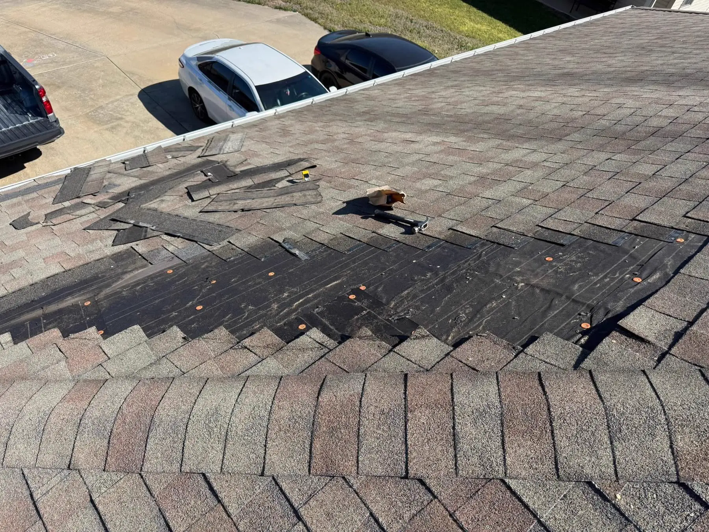

CALL A LIVE PERSON NOW
(479) 652-1424
Request Service
Compare shingle, standing seam metal, and TPO flat roofing systems. Compare costs, lifespan, and storm resistance in NWA.



Selecting a new roof involves balancing upfront cost, aesthetic preferences, and long-term durability. At Ramos Roofing Plus, we believe in providing clear, honest comparisons to help you choose the best system for your home or business.
Asphalt Shingles remain the most popular choice due to their affordability and classic appearance. Premium lines like TAMKO Titan XT and Malarkey Bella Vista offer excellent wind and hail resistance at a reasonable price point.
Standing Seam Metal Roofing represents a higher upfront investment but offers unmatched durability, lasting 50+ years and reflecting solar heat to reduce cooling bills. TPO is the ideal choice for flat commercial decks, creating a continuous waterproof seal.
"They handled my roof replacement after a severe wind storm in Bentonville. Extremely clean job and outstanding service!"
"We had them inspect and fix storm damage. They walked us through the insurance papers, very professional team!"
Asphalt shingles are the most common residential option, offering a lower upfront cost, simple installation, and a 20-30 year lifespan. Metal roofs (especially standing seam) carry a higher upfront cost but offer a 50+ year lifespan, superior wind and storm resistance, and outstanding energy efficiency. Metal roofs reflect solar heat, reducing cooling costs during hot summers.
Standard architectural shingles offer basic wind and water protection. Class 4 shingles are modified with rubberized polymers (like Flexor asphalt technology) that allow them to absorb the impact of hail up to 2 inches in size without fracturing. Class 4 shingles protect your home against spring storms and often qualify you for insurance premium discounts.
For commercial flat and low-slope roofs in NWA, TPO (Thermoplastic Polyolefin) is the leading choice. TPO is a single-ply white membrane that is heat-welded at the seams to form a continuous waterproof barrier. Its reflective white surface bounces solar heat away, lowering cooling costs compared to traditional built-up or EPDM rubber roofs.
No. When installed over solid roof decking with high-quality underlayment and attic insulation, a residential metal roof is no noisier than a traditional shingle roof. The solid decking and insulation dampen the sound of rain, ensuring a quiet interior environment for your home.
Standard vinyl siding lasts 20 to 30 years and requires very little maintenance. James Hardie fiber cement siding offers a 50+ year lifespan and superior durability. Fiber cement is non-combustible, resists rot and pests, and withstands heavy hail and wind impacts much better than vinyl, making it a premium long-term option.
Standing seam metal roofs use hidden clips and fasteners underneath the panels, eliminating exposed screws that can leak over time. This makes standing seam the gold standard for residential roofs. Exposed-fastener rib panels are secured with screws that penetrate the metal, offering a cost-effective option for barns and outbuildings.
Yes, metal roofs are significantly more energy-efficient. Shingles absorb solar heat and radiate it into your attic, increasing cooling loads. Metal roofs are coated with reflective finishes that bounce solar heat away. This thermal barrier can lower attic temperatures and reduce your summer cooling costs.
Standing seam metal roofs and premium shingles like the TAMKO Titan XT offer the best wind protection. Standing seam panels interlock and lock to the deck, resisting wind lift. Titan XT shingles feature a reinforced nail zone and carry a Class H wind rating of up to 160 MPH, preventing blow-offs during severe storms.
Sloped roofs shed water and debris naturally. Flat roofs can accumulate debris (like leaves and branches) that traps water and clogs drains, leading to ponding. Flat roofs require regular inspections (at least twice a year) to clear drains and check seam welds to prevent leaks.
You can schedule a consultation by calling us at (479) 652-1424 or filling out our online request form. Our roofing estimators will visit your property, evaluate your roof structure, discuss material pros and cons, and provide detailed estimates for different options.
Know someone in Fort Smith, NWA, or Eastern Oklahoma who needs a new roof or siding? Refer them to Ramos Roofing. Once their roof replacement is completed, we'll write you a check!